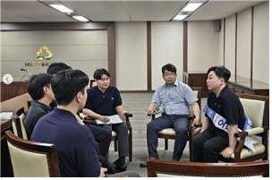
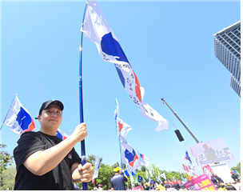

함께했던 동지가,
이제 새로운 책임으로
제1대 조합이 함께 걸어온 3년, 그리고 오동희 후보에 대한 이야기입니다.

조합원 여러분 안녕하십니까. 초대 노동조합이 조합원 여러분과 함께한 시간이 어느덧 3년이 되었습니다.
23년 대내외적으로 혼란스러웠던 시기에 중앙회에서 우리 스스로를 지키기 위해 노동조합을 만든 것 자체가 큰 의미가 있는 일이지만, 조합이 힘을 키우고 발전하려면 사용자측과의 정보비대칭을 완화해야 하고 조합이 데이터와 논리로 사측과 대응하는 체력을 길러야 했습니다.
지난 3년은 도전의 연속이었습니다. 조합 운영을 위한 각종 규정 제정, 분회 및 대의원 구성, 조합비 현실화, 단체협약 초안 작성, 수십 차례의 단체협약 소실무교섭과 본교섭, 최초 임금교섭안 작성 및 기획, 창립 2주년 기념행사 개최, 각종 노사협의회 대응, 그리고 마침내 단체협약 체결까지. 어느 하나 쉬운 일은 없었습니다.
초대 집행부는 머리를 맞대고 내부적으로 치열한 토론과 방향설정을 통해 노동조합 재건의 길을 걸어왔고, 이 길은 운영위원, 대의원 그리고 조합원 여러분의 힘이 있었기에 가능했습니다.
또한 단체교섭 소식, 임금교섭 소식, 카드뉴스, 각종 안내문과 최근 「노동조합 3년, 이렇게 변화했습니다」, 「조합원 1인의 생애주기에 따른 변화」 자료까지 조합에서 발송한 대부분의 안내자료에는 가장 중요한 기준이 있습니다. 바로 '조합원의 눈높이'입니다.
복잡한 내용을 쉽게 설명하고, 데이터를 근거로 제시하며, 조합원 여러분이 궁금해하는 부분에 답할 수 있는 노동조합을 만들기 위해 노력했습니다. 운영위원 단톡방 및 연락체계를 구축하여 중요사항 및 이슈사항들을 항상 운영위원 및 전조합원에게 알려왔으며, 운영위원을 통한 대의적 의견 수렴절차를 항상 거쳤으며 그 결과로 도출된 의사결정들은 집행부만의 조합이 아닌 모두를 위한 노동조합의 정당성을 더해주었습니다.
그 결과 지금 노동조합은 사측이 전수 데이터를 제공하지 않더라도 상당한 수준의 분석과 정책 검토가 가능한 역량을 갖추게 되었습니다. 이는 앞으로도 노동조합의 중요한 자산이 될 것입니다.
3년 동안 노동조합의 기반을 만드는 데 많은 역량을 쏟아부었습니다. 다만 돌이켜보면 조합원 고충상담과 의견수렴 등 현장과 직접 소통하는 활동은 스스로 목표를 설정했던 것만큼 충분히 하지 못했던 아쉬움도 있습니다. 그래서 앞으로의 노동조합에는 현장과 조합을 더욱 가깝게 연결할 수 있는 사람이 필요하다고 생각합니다.
초대 조합이 가까이에서 지켜본 오동희 사무국장 후보는 바로 그런 사람입니다. 현업으로 바쁜 와중에도 결코 쉽지 않은 노동조합 활동에 스스로 참여하며 대외협력본부장으로서 많은 역할을 해왔습니다. 조합원의 목소리를 듣기 위해 노력하는 모습, 맡은 일을 책임 있게 추진하는 모습, 그리고 노동조합의 미래에 대해 고민하는 모습을 보며 언젠가는 더 큰 역할을 맡을 준비가 되어 있는 사람이라고 생각했습니다.
노동조합은 특정 개인이 만드는 조직이 아닙니다. 35년 만에 다시 세운 노동조합의 정신과 경험은 계속 이어져야 합니다. 지난 3년 동안 함께 만들어온 노동조합의 경험과 성과를 이어가는 일에 있어 오동희 후보가 충분히 그 역할을 해낼 수 있다고 믿습니다.
초대 조합은 오동희 후보가 현장과 조합을 더욱 가깝게 연결하고, 조합원들의 목소리를 더욱 세심하게 담아낼 것이라고 확신합니다.
조합원 여러분의 올바른 선택을 부탁드립니다.
